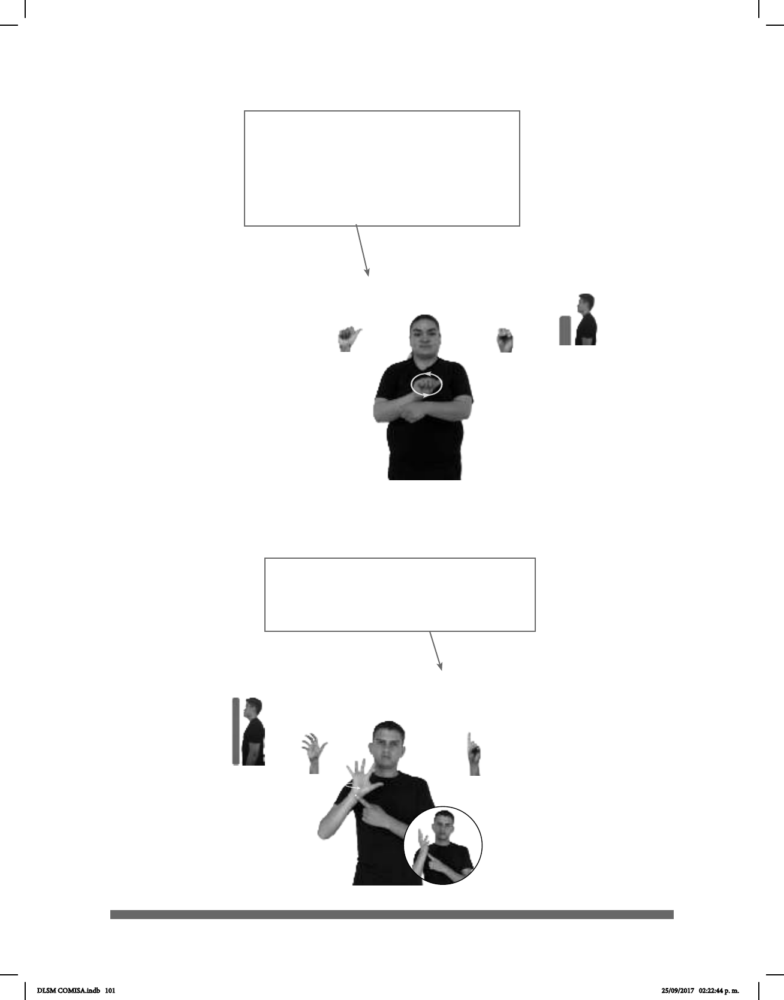

101
(A-70) Auto – Coche – Carro – Automóvil
| Antena parabolica
1
/ (5-G 25)
Tulancingo, Hidalgo
2
VIII. Algunas señas pueden tener más de una
forma equivalente en español. Los sinónimos
aparecen en el DLSM con guiones largos.
Esto se decidió en las reuniones hechas en el
INDEPEDI de acuerdo con el uso que la co-
munidad sorda hace de algunas señas en re-
lación con el español.
IX. Asimismo, existen palabras en español cuyo
signicado es cubierto por una sola seña. Estos
casos de polisemia están marcados con diago-
nales.
DLSM COMISA.indb 101 25/09/2017 02:22:44 p. m.